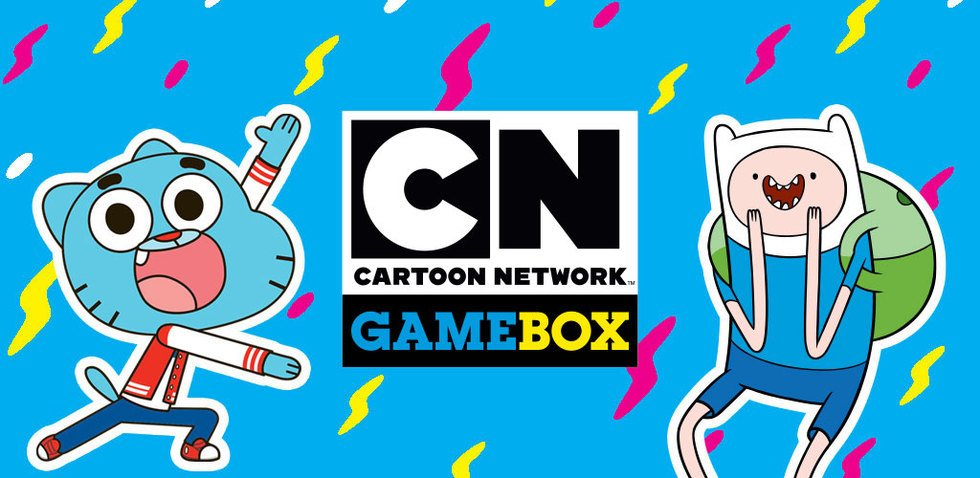
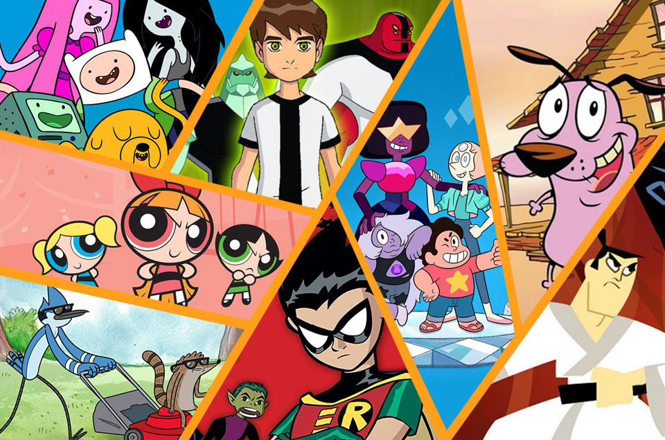

Que es Cartoon Network
Cartoon Network es un canal de televisión por suscripción estadounidense infantil centrado en series de animación para niños y adolescentes.
El canal basa su programación en los géneros de acción y comedia, y comparte horario de programación con el canal Adult Swim desde las 6:00 a.m. hasta las 8:00 p.m. (horario de la costa este de los Estados Unidos). Ambos espacios son diferenciados como canales independientes en las estadísticas de audiencia de la empresa Nielsen Holdings para su posterior estudio y análisis.
Un Poco De Historia
A finales de 1981, el conglomerado de televisión por cable de Ted Turner había adquirido la biblioteca de películas
Cartoon Network tuvo una idea inicial de transmitir los programas del archivo de Turner en ese año, y la programación inicial consistía exclusivamente en reposiciones de series de animación clásicas de Warner Bros. MGM, con muchas caricaturas de Hanna-Barbera usadas para llenar espacios. En 1996, la compañía Time Warner adquirió Turner Broadcasting System, lo cual sirvió a Cartoon Network para disponer de nuevo material, al tener ahora acceso a todo el archivo de Warner Bros. de los años 50 y 60. A partir de entonces, Cartoon Network inicia su producción propia en colaboración con el estudio de animación Hanna-Barbera.